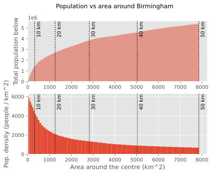
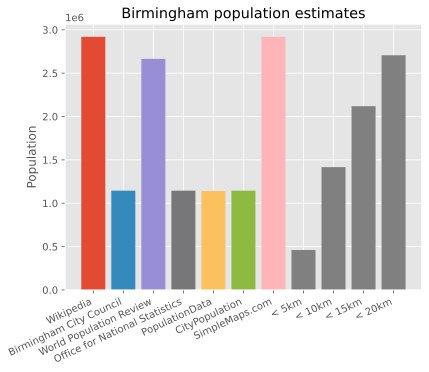

Ring populations: how to compare cities more agnostically
I love comparing the population of cities. I hate that every city is seemingly measured differently.
How am I supposed to answer my pressing questions like: is Leeds big enough to deserve a tram?
Internet-Inconsistencies
There would exist no problem if I could search "Birmingham, Alabama population", then "the real Birmingham population" to back up my arguments of why I shouldn't be seeing results for American towns when I'm trying to find a map of bus routes in the real Birmingham (for the results of this search, see lower down). However, with almost every city I search for population, the top results are from different sources, and the search engines (trying to shave precious seconds off my day) seem to pull their "summary" figure from a different one of these websites for every city.
"Population of Birmingham" from the first few sources I could find on Google. Presumably the identical ones all use ONS' data, and the others are more 'international' statistics. Source.
Let's concentrize!
The solution to this problem of inconsistency... is to introduce consistency! Sociologists, anthropologists, and geographists will berate me for this, but my idea was just to draw a circle around the centre† of the city and count how many people are inside it.
Here is where I would explain the efforts I went through, the technological tools I learnt, and the troubles I faced in writing a simple-to-use website to find the population within a circle. However, the good Tom Forth already made this, with his page: Circle Populations. Let's use this to take a look at Birmingham.

As you increase the area you're measuring, population increases, and density decreases! Revolutionary! Source.
Comparing this with the original plot above, it seems like 10 km is about inline with the ONS data.

The same graph from above! This time with the population within a 5/10/15/20 km ring around Birmingham. New insights? Or content padding? Source.
Thus, I'll stick with 10 km as my favourite circle size. Easy to remember. This may be showing a bit of decimal favouritism, as 10 km seems a nice default type if you use base 10. If the world were ruled by jan Misali, maybe we would end up using 6 km (10 in seximal). If the world were ruled by the Mayans, we might use 12 km (10 in duo-decimal). In the end, the world was ruled by the French, so 10 it is.
What does 10 km look like?
If you're aware of "The North", here are some of its gems with a 10 km overlay (and of course, Birmingham). By my eye, it looks like a bigger circle could be misleading in terms of the population it represents, but a smaller one might miss out the context of the city.
For example, I like Newcastle's region including Sunderland, as they're nicely connected by metro. As for Leeds, Bradford, and Wakefield. Well... they could be nicely connected by metro.
Here. Find a city you know a bit. Does 10 km seem a good measure? Would your city be improved with a giant, imposing 10 km circle in the sky? Screenshots from Tom Forth's Circle Populations (circle your own city there!).
Cities, sorted
With a metric decided, we can see what the cities of the UK look like! London is, naturally, excluded.

Ring populations! Tag yourself. Source.
Nice! Conclusions are free for you to draw.
Appendix
Birmingham vs Birmingham
Above, I complained about Birmingham, Alabama vs Birmingham England. With the search terms above, this is what I find the populations to be:
| Source | Birmingham, AL | Birmingham, UK |
|---|---|---|
| 198,000 | 2,660,000 | |
| Within 10 km | 267,000 | 1,420,000 |
Google's population result vs using Circle Populations.
Extra stuff
- Circle Populations also shows you how many bus, tram, and train/metro stops are in a circle. Very nice for complaining about your city not having trams yet.
- Tom Forth has also made Ring Populations, which is a similar idea to Circle Populations, but shows the change in population densities and ring populations since 2001 (UK only).
- Colours for the cover image generated with ColorDesigner.io
Data
You can view the code to make the above graphs in the GitHub repository! In particular, check out these Jupyter notebooks:
You can open and play with these notebooks on Binder.
Footnotes
† - the 'centre' of a city is a pretty arbitrary term, but with the sizes of circles we're working with, and the population density drop-off from the centre, it doesn't really make a difference to the final population count.
Comments
Email me → alifeee@alifeee.net :)
Message me on any social media → https://linktr.ee/alifeee :)